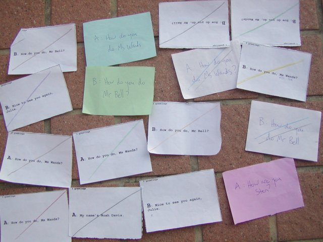

Cards are good.
- You are using less paper than a whole A4, or B5 piece.
- They are convenient to store and can be recycled. When the students have finished using them, you can collect them to use in another class.
- There is a lot less content and thus they are less taxing of the students' attention span.
- They are physical things that can be grouped and exchanged. We can have a competition to be the first team to get rid of all our cards, if we can:
- read the card.
- answer a question about the card.
- talk about the content of the card.
- put matching cards together.
A problem with matching cards was students borrowing cards from different teams. To prevent this I started color coding the cards a team got. First I used color paper, but the care and preparation required to get the cards printed out in the right number on the different color sheets led me to color them by just drawing a line with a color pencil over the card.  One problem with the color pencil is distinguishing a light blue and blue line, a pink and red line, and a gray and black line. And with more than 12 groups, but only 12 color pencils, I have to form a Blackandblue group and a Brownandgreen group.
This semester I am trying just 8 colors, Black, Blue, Brown and Green for the Dark Side, and Purple, Red, White, Yellow for the Light Side. But I have more groups than this, so I multiply the 8 colors by drawing 1,2, or 3 lines on the cards to distinguish a maximum of 24 groups.
Another problem with cards is the adjustment and editing I have to do to texts to make sure they fit in the limited space. This is very time-consuming.